WEEK 6 (01 March 2017)
[Electronics Design ]
This week the electronics design assignment is to redraw the Hello-World board and adding at least a Button and LED and check the design rules.
This week assignment is about learning how to design and fabricate a PCB from scratch using Eagle. The Art of Electronics is a great reference book for any component or Electrical circuit design.
And a good source for DataSheets of components is Octopart, we will need to visit the data sheet of certain components and learn how to connect it with certain values.
To make this task we were introduced to Eagle. This software let us make a layout with all the components. We can define path thickness and routes.
Getting Started With Eagle:
Step 1 - Download and install Eagle;
Step 2 - Sample echo board Schematic / board;
Step 3 - Download and install the components libraries;
Step 4 - Edit the schematic;
Steps followed:
First I downloaded the EAGLE 8.0.2 free version. (You can download eagle here, choose "free version of EAGLE")
This is the schematic echo hello-world board
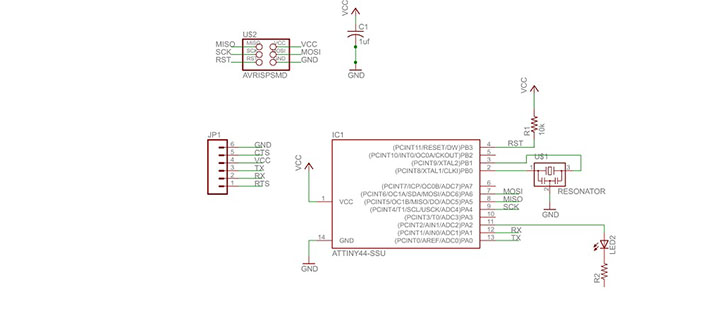
After that we go to Fablab component library:
Copy the library into the install directory of eagle into a folder called "lbr" (in Windows it is most likely C:\Program Files\EAGLE\lbr\ (fact check this).
fab.lbr
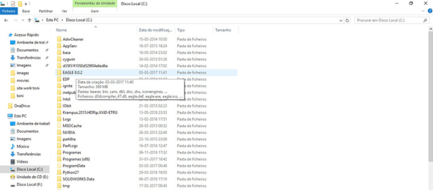
I Created a new project:
File -> New -> Project
And I created a new Schematic and Board
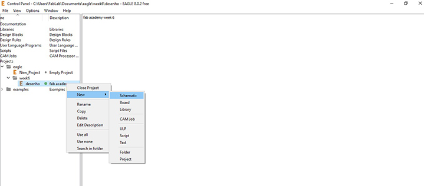
I Activated the Component Libraries
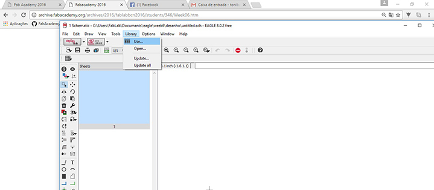
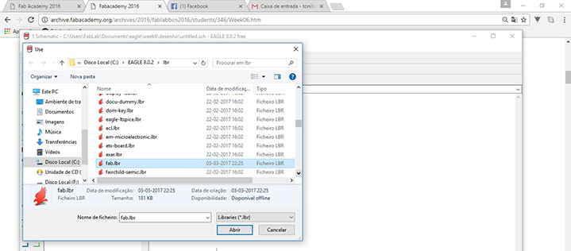
I had a look at the Fab Inventory Spreadsheet which contains a list of all parts with codes and suppliers, and I checked it according to the datasheet of each component.
I Added a component in eagle: press "add" on the command line or press add in the tool bar. And search the components.
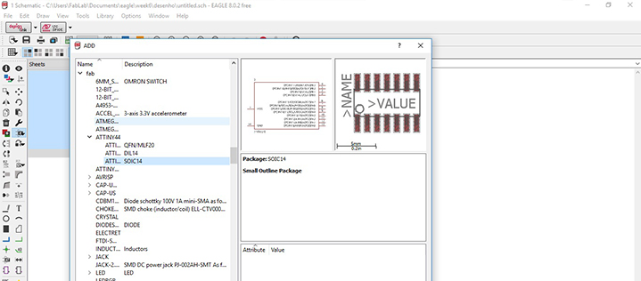
The components:
- 1X 6-pin programming header: for programming the board
Inventory: 649-95278-101A06LF
Fab library symbol: AVRISPSMD
- 1X Microcontroller: attiny44A. Once the microcontroller is programmed, the program stored in non-volatile memory. This means that it will remember the program.
Inventory: ATTINY44A-SSU-ND
Fab library symbol: ATTINY44 (We do not have ATTINY44 in Fab Lab because it's sold out, and so we'll use a ATTINY45)
- 1X FTDI header: powers the board and allows board to talk to computer
Inventory: CONN HEADER 36POS .100 R-A SMD (S1143E-36-ND)
Fab library symbol: FTDI-SMD-HEADER
- 1X 20MHz resonator: external clock. The attiny has a 8Mhz clock but the resonator is faster (increase the clock speed of the processor) and more accurate.
Inventory: CER RESONATOR 20.00MHZ SMD (XC1109CT-ND)
Fab library symbol: RESONATOR
- 2X Resistor (value 10k)
Inventory: RES 10.0K OHM 1-4W 1% 1206 SMD (311-10.0KFRCT-ND)
Fab library symbol: RES-US1206FAB
- 1X Button (OMRON switch)
Inventory: SW262CT-ND
Fab library symbol: 6MM_SWITCH6MM_SWITCH
- GND
- VCC
- 1X LED (Light Emitting Diode) - LEDs have polarity - the side with the line is the cathode and connects to the ground side.
Inventory: 160-1167-1-ND
Fab library: LEDFAB
- 1X Resistor (value 100 ohm)
Inventory: 311-100FRCT-ND
Fab library symbol: RES-US1206FAB
INTERFACE / BOARD
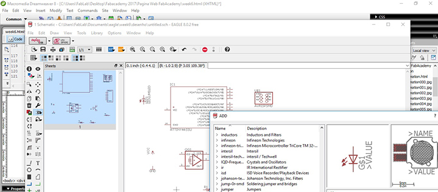
For switching to the board interface from the schematic I used the command line typing board pressing Generate/switch to board.
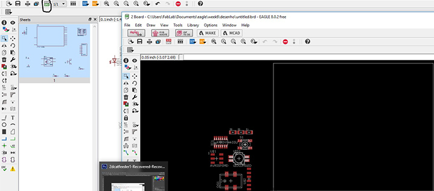
Making the schematic, commands (use the command line or the menu):
For moving a group of parts:
1_select move
2_select group
3_right click + command
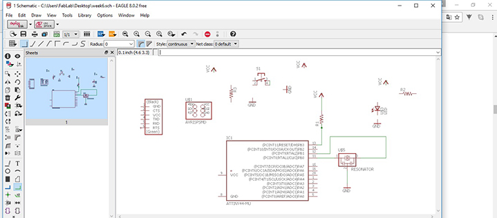
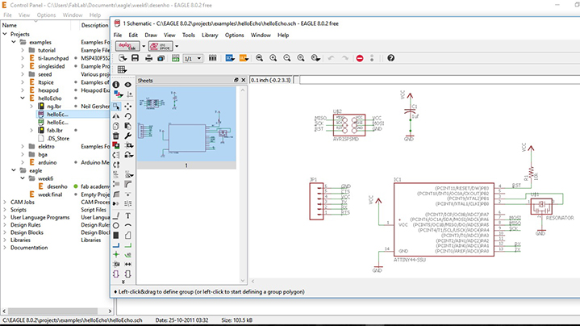
I tried to make my board in full, but I had great difficulty making it so I decided to go the easy way, I downloaded the files of the board "Hello Echo", I opened the diagram and followed the steps to add the missing components, resistors, LED and button.
The components:
Resistor - A resistor is part of an electrical circuit that resists the flow of current.
Capacitor - A capacitor is a device used to store an electric charge, consisting of one or more pairs of conductors separated by an insulator. Capacitors are often used as filter devices to remove voltage or signal spikes in electronic circuits
Led - Light-emitting diode, a semiconductor diode that glows when a voltage is applied.
Vcc (Power) - Is positive relative to ground.
We will add components to the schematic view and create connections between them
The board layout shows how the electrical componets and traces will be laid out on the board.
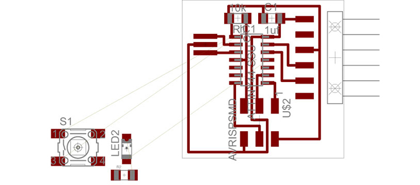
After that I used the "Show" command in order to see the display of the components on the "Board", after that I was able to organise it the best way possible and I made the connections between the components using the "Route" tool, following the logic of the schematics.
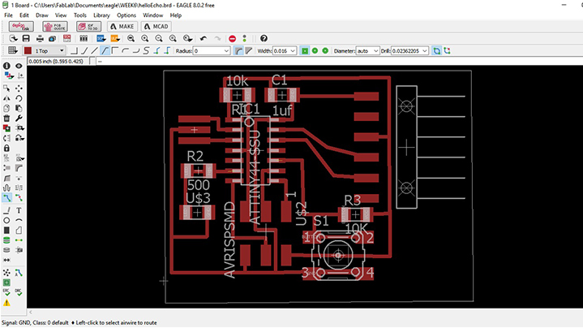
EXPORTING THE DESIGN & MILLING
Once the design was finished and checked I exported PNG files of our design:
- Selected through LAYERS option the appropriate layers to export
- 500 dpi resolution
- MONOCHROME
- full area
- In Photoshop I edit the board
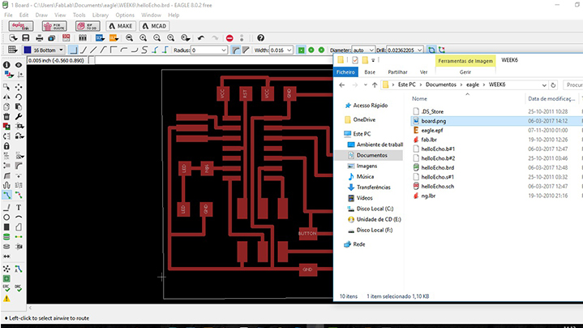
Settings should be MONOCHROME and 500 DPI - this will export an image with white traces, then "Export" as an image, afterwards I created a new layer based on the size of my board and painted it in "White" in photoshop.
 Now it's time to generate the gcode. Using fabmodules website upload the .png files, select the process 1/64 for milling the traces and 1/32 to cut the outline. In Fablab Aldeias do Xisto we are using the Roland MDX 40-And the steps are the same of WEEK 4 [Electronics Production]:
Now it's time to generate the gcode. Using fabmodules website upload the .png files, select the process 1/64 for milling the traces and 1/32 to cut the outline. In Fablab Aldeias do Xisto we are using the Roland MDX 40-And the steps are the same of WEEK 4 [Electronics Production]:
- Open the image (PNG) in Fabmodules;
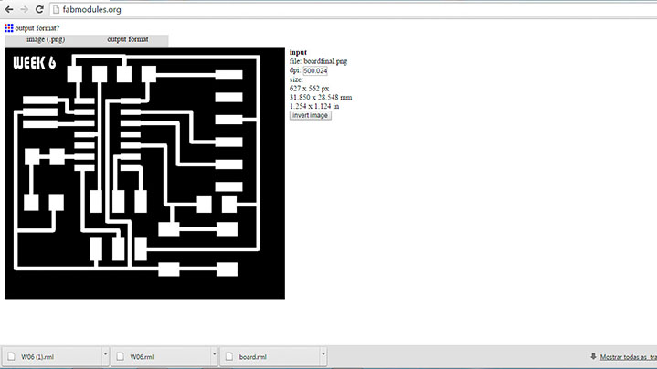
- I Selected the Machine ( Roland MDX 40) and the PCB traces 1/64;
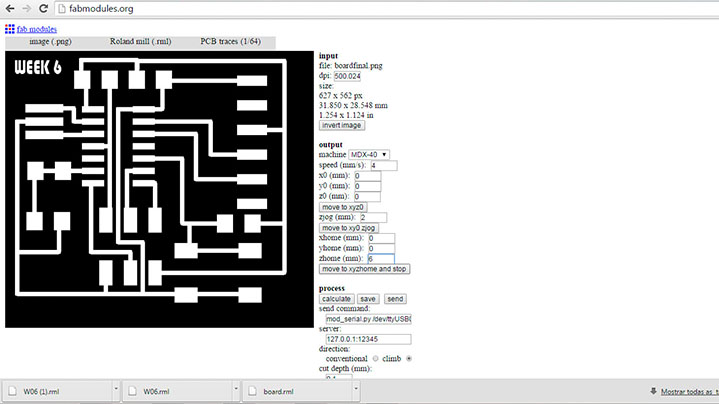
- I change the Settings:
Cut depth - 0.1mm;
Tool diameter - 0.25mm;
Number of offsets - 3;
After that I "Process Calculate" ;
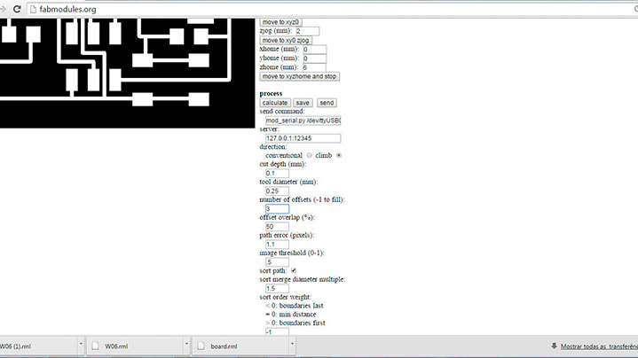
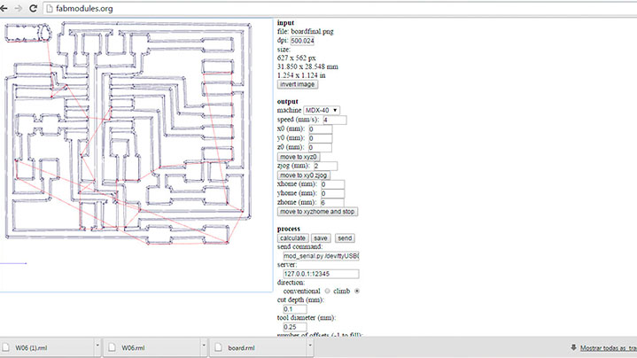
- Then I save de "rml file - boardfinal " and I opened it on the Vpanel of the Modela MDX40, where are the machine coordinate system anda I then changed the settings in X Y and Z ;
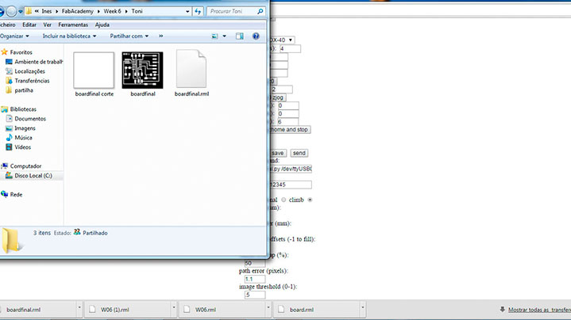
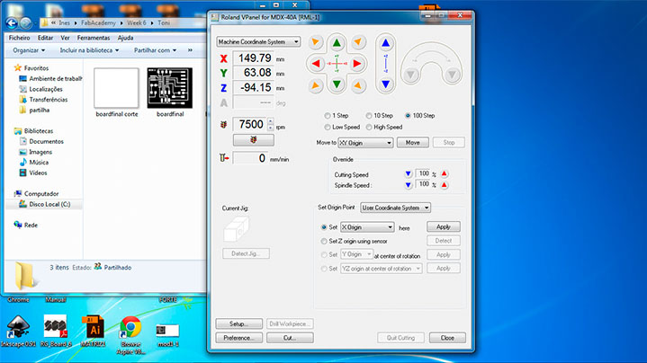
- Finally I delete de old file and opened my new "rml file", and then I output to start milling;
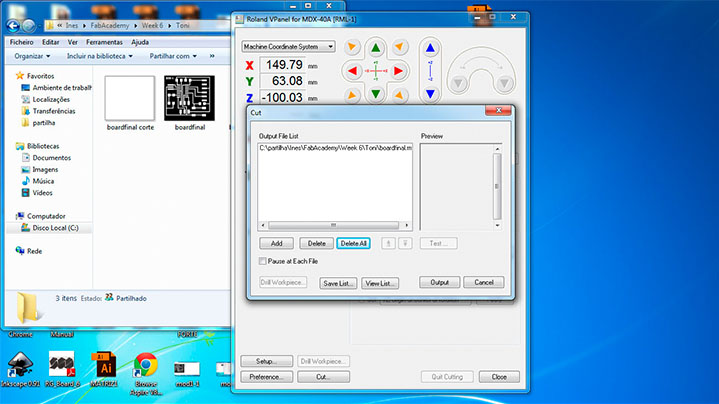
MILLING
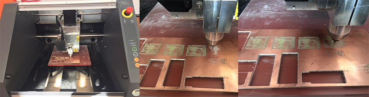
- And the final Hello-World board with a Button and a LED ;
Final step
- Soldering;
- And the final Hello-World board with a Button and a LED;
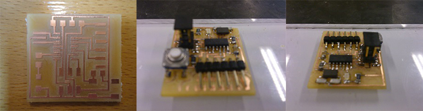
Files: